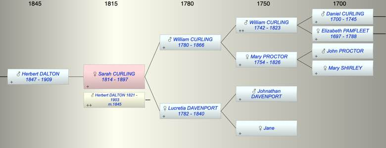

| [Index] |
| Sarah CURLING (1814 - 1897) |
|  |
| b. 11 May 1814 at City of London |
| m. 28 Apr 1845 Herbert DALTON (1821 - 1903) at Clerkenwell |
| d. 1897 at Tunbridge Wells aged 83 |
| Parents: |
| William CURLING (1780 - 1866) |
| Lucretia DAVENPORT (1782 - 1840) |
| Siblings (5): |
| James CURLING (1808 - 1858) |
| Jane CURLING (1810 - ) |
| Mary CURLING (1812 - 1876) |
| Martha CURLING (1816 - 1898) |
| John CURLING (1821 - 1863) |
| Children (1): |
| Herbert William DALTON (1847 - 1909) |
| Grandchildren (1): |
| Joseph DALTON |
| Events in Sarah CURLING (1814 - 1897)'s life | |||||
| Date | Age | Event | Place | Notes | Src |
| 11 May 1814 | Sarah CURLING was born | City of London | ex Non Conformist register FMP | ||
| 1840 | 26 | Death of mother Lucretia DAVENPORT (aged 58) | Denmark Hill, Lambeth | Note 1 | |
| 28 Apr 1845 | 30 | Married Herbert DALTON (aged 24) | Clerkenwell | ex FMP no details | |
| 17 Jun 1847 | 33 | Birth of son Herbert William DALTON | Lambeth | Note 2 | |
| 1866 | 52 | Death of father William CURLING (aged 86) | London | Note 3 | |
| 1897 | 83 | Sarah CURLING died | Tunbridge Wells | Note 4 | |
| Created on a Mac™ using iFamily for Mac™ on 8 Oct 2023 |